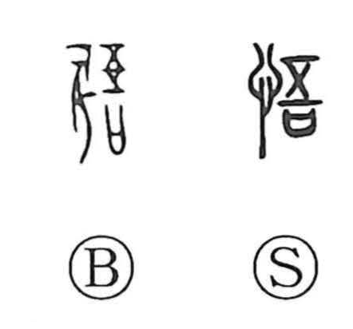

悟

Kun: satoru | On: go
to realize ・ to awaken ・ to perceive ・ enlightenment
Explanation
悟 combines 心, the heart and mind, with the sound element 吾. 吾 shows a vessel containing a prayer beneath a double wooden cover. The cover protects the prayer from interference and keeps its power intact.
In 悟, what is guarded is the mind’s clarity. Confusion and delusion are driven away so that the heart can remain lucid. In that condition, the principles of things can be known distinctly. 悟 therefore means to awaken, realize, or understand.
The awakening can be a return from unconsciousness or an arrival at insight. In both uses, an obscured awareness becomes clear again, and something that could not previously be grasped is now understood.